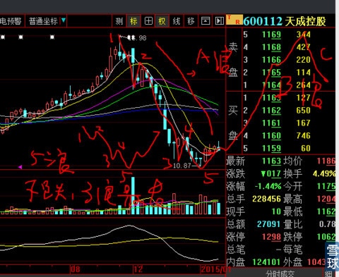
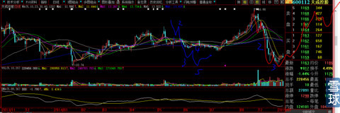
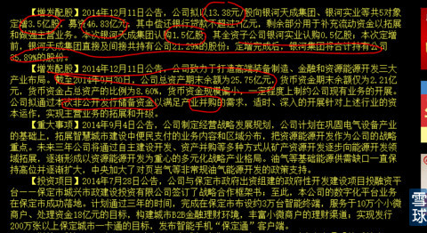

祥子威武霸气@炒的是心：心大您好，为什么天成股份12月24号长长下影线不是底部，1月5号是的，是因为macd的绿柱子还在变大吗？
炒的是心回复：
因为600112这轮下跌是很经典的完整小5浪推动下跌，见下图红线标注。所谓的五浪是指：3个上涨或者下跌浪，1、3、5浪的其中第三浪总是最长的。起码也是等长的，“心形”就是上涨部分吃那个最长的3浪，下跌的时候也是回避那个最长的下跌3浪。2、4浪在股价上涨途中是回调下跌，在大的下途图中是反弹浪。
有了以上的简介，现在可以清楚回答你的问题了
1、既然那么清晰的下跌推动5浪走完，基本可以确定是阶段性底部，是不是大的底部呢？我也不知道！
2、为什么不知道？因为即使我心理主观认为是1年或者今后2年的大底，也尽量去除这种心理杂念。为什么？因为你看看2008年的下跌，防不胜防。

3、再从更大的形态来看，本次的低点是整整12个月以来的最低点附近，上次的低点是在大盘2000点形成的，现在大盘已经快到3500点，所以，从形态上来讲，未来2年甚至5年的大底就是我买入的那天的前一天。

4、从价格上来看，这次下跌是从17元（16.98）开始，一直下跌到10.87元，跌幅为36%，基本打了个六折，这个下跌幅度是惊人的，你不在其中就没有感受。那么从10.87元回到16.98元却是涨幅56%，完全够一个快速反击的空间，所以我说它的反弹都会比人家的主升浪还爽。

5、我们从最近的公司公告发现，这次定向增发很有看头，第一、增发前公司即使没有剔除负债的总资产也才25.75亿元，其中股东权益也就是资本金12.13亿元，股本总数却是5.09亿股，每股净资产为2.38元。这次增发募集的现金就是46.8亿元，增发股数只有3.5亿股增发价格是13.38元。一下子把公司的核心资本实力来了一个天翻覆地的变化，这可不是小打小闹的修修补补。增发后净资产合计=12.13+46.8=58.93亿元/（现股本5.09+增发3.5=8.59亿股）=净资产6.86元。
6、增发46.8亿元现金只归还银行借款不超过7亿元，还剩余40亿元，明确告知未来用于“并购”准备金，预计并购之时还会对并购对象增发部分股份，这样一来，并购对象规模可能会上百亿元。这么明确的公告不相信，难道听小道消息？
7、从上分析我们大致可以得出结论，即使大盘再跌回2000点，天成控股也会是最早一批返回3500点位股价之一。更加可以有信心的是，它目前的价格决定了，一定会是2015年—2016年牛股之一。我们的目标不要太大，就算6个月70%涨幅好了，就很确定的达到我的盈利模式需求了。
8、我为什么会买它呢？因为我说过，做股票一定要从底部做起，你的持股一直是盈利状态，持股的心态会完全两样，持股的决心和毅力会相互佐证交叉鼓励。
9、从以上分析，大家可以再次窥测到我选股的真实内心世界以及对粉丝的呵护之情。
10、天成控股之所以增发公布暴跌，是因为石油价格暴跌的影响，想想未来石油价格的上涨以及它现在的价格（价格的贵贱总是相对的），就知道牛股是如何练成的。
11、可能有人说：心大你不是只买多头排列的股票嘛？是的，你说的没有错，不过这不是我在替人家挑选吗？那只股票不是从极端空头走出来的呢？关键是你有没有这双眼睛看出来它真的是底，是底的话，当然谁都想买在最低价。
12、我会写几个我如何因为没有正确理解《时间的玫瑰》理念从2007年大盘的6400点满仓下跌到1640点后2000万资金被打到350万左右（不包括被关ST创智），又在2008年11月，用3个月不到时间后大盘只反弹到2400点的时候，我的资金就重回6400点并超过10000点的痛定思痛翻身仗。这个是命运，这里具体操作过程只有我最早的几个粉丝知道。
刚刚看到有人说：
人生就是一次旅行@炒的是心：何为一浪？2点一连就一浪吗？笑话。
我的回复：
嘿嘿，果不出我所料，预知会有所谓的假货“高手”对本帖子里的“5浪”说法找毛病。
第一、你自己去读书，找到波浪理论艾略特原著去读；
第二、我估计你也读不懂书中真谛，不是小看你，就凭一出口就知道你只有几斤几两；
第三、所谓的5浪，是一个完整的大上升阶段浪或者大下跌阶段浪，途中会包含有3个逐次的上升浪或者下跌浪，也就是中国俗话：一而再，再而三，三而竭。这是我认为波浪理论鼻祖“艾略特”创建波浪理论中的西方理性文化与东方感性文化哲学的一次最完美的结合。
量你这一辈子也搞不懂什么叫读书：融会贯通！
 |
回复600112天成控股炒的是心 2015-01-11 19:09:01 |
Copyright © 1996-2014 SINA Corporation All Rights Reserved.